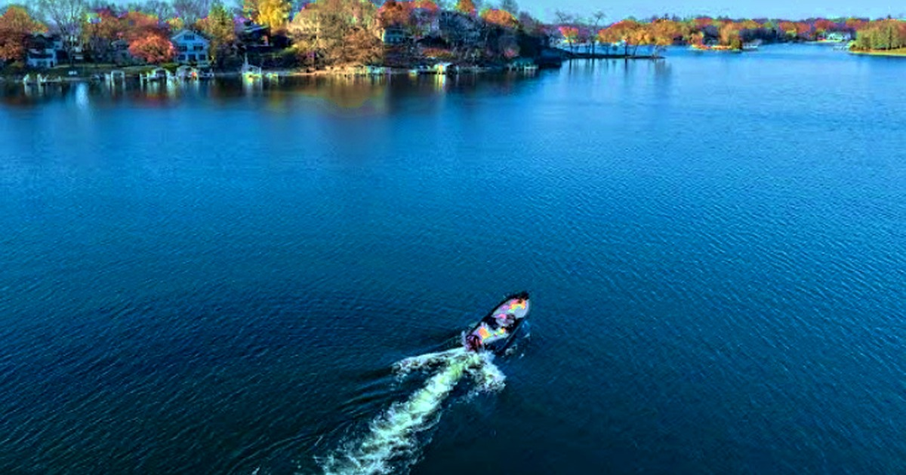

Home / Lake Minnetonka Bays / Carson's Bay

Carson's Bay on Lake Minnetonkapaddleboards, porches and a general store
Carson's is a no-wake bay on weekends and holidays, so mornings are paddleboards and little sailboats. Up the hill in Cottagewood the general store has been going since 1895, and when it closed, 135 neighbors got together to save it. That tells you about the place.
Geoffrey Serdar
Good to know
- SunThe Cottagewood shore looks east across the bay for sunrise over the water. Grandview and the east shore face west for summer sunsets.
- WaterAbout 173 acres, 2.74 miles of shoreline, 64 feet at its deepest, and about 62 percent shallow and weedy.
- RulesLMCD no-wake bay on weekends and holidays.
- HistoryNamed for Elijah Carson, an early Deephaven landowner. In 1878 the Carsons sold 108.55 acres that became the Hotel St. Louis site. Hazen and Alice Burton built Chimo on the south shore, and Burton became Deephaven's first mayor. Cottagewood was platted in 1876.
- NeighborsMinnetonka Yacht Club, founded 1882, sits on Lighthouse Island nearby.
- IceLake-wide ice-out median is April 13. In 2026 the ice went out April 3.
What homes here ask and sell for
| SOLD | $7.6M | 19955 Cottagewood Ave | Sept 30, 2024 |
ASK means a list price, not a sale. Sales are public records or reported sales, shown with their date. Nothing here predicts future prices. See the most expensive homes on the lake and this week's closed sales.
Getting on the water
Carson's Bay Launch on Minnetonka Blvd is a public access, open year round. Burton Park is nearby. More: Lake access and boat slips and the Lost Lake slip guide.
Where to eat and stop
- Cottagewood General Store, the neighborhood store since 1895
- Excelsior, a short boat hop away. See the St. Albans and Excelsior Bay page.
Towns on the bay
Questions people ask
Is Carson's Bay no wake?
Yes, on weekends and holidays under LMCD rules.
Which towns are on Carson's Bay?
Deephaven, including the Cottagewood neighborhood, with Excelsior close by.
Is there a public launch?
Yes, Carson's Bay Launch on Minnetonka Blvd, open year round.
What have homes on Carson's Bay sold for?
19955 Cottagewood Ave sold for $7.6M on Sept 30, 2024.
Explore all the bays.